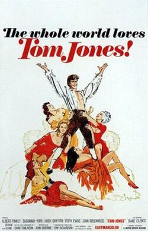

Tom Jones
36th Academy Awards
(Oscars 1964)
10 Nominations, 4 Awards
| Nominations | ||
|---|---|---|
| Category | Nominees | Result |
| Best Picture | Tony Richardson | Won |
| Actor | Albert Finney | Nominated |
| Actor in a Supporting Role | Hugh Griffith | Nominated |
| Actress in a Supporting Role | Dame Edith Evans | Nominated |
| Actress in a Supporting Role | Diane Cilento | Nominated |
| Actress in a Supporting Role | Joyce Redman | Nominated |
| Directing | Tony Richardson | Won |
| Writing (Screenplay--based on material from another medium) | John Osborne | Won |
| Art Direction (Color) | Jocelyn Herbert, Josie MacAvin, Ralph Brinton, and Ted Marshall | Nominated |
| Music (Music Score--substantially original) | John Addison | Won |